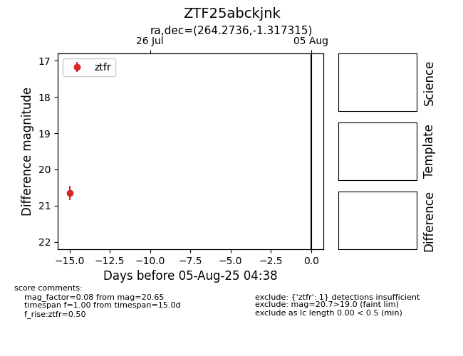

Target ZTF25abckjnk at 2025-08-05 04:38, see:
FINK: fink-portal.org/ZTF25abckjnk
Lasair: lasair-ztf.lsst.ac.uk/objects/ZTF25abckjnk
ALeRCE: alerce.online/object/ZTF25abckjnk
alt names
ZTF25abckjnk (ztf,fink)
coordinates:
equatorial (ra, dec) = (264.2736,-1.31731)
galactic (l, b) = (23.0100,+15.84910)
photometry
last ztfr=20.65
1 ztfr detections
